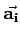

Inhalt Index DeskTop Bronstein

 Algebra und Diskrete Mathematik Klassische algebraische Strukturen Anwendungen von Gruppen Symmetriegruppen in der Kristallographie
Algebra und Diskrete Mathematik Klassische algebraische Strukturen Anwendungen von Gruppen Symmetriegruppen in der Kristallographie


Berücksichtigt man die möglichen Kombinationen der relativen Länge der Basisvektoren  und der paarweise zugeordneten Zwischenwinkel  (besondere Winkel
(besondere Winkel  und ), dann ergeben sich 7 verschiedene Typen von Elementarzellen mit den entsprechenden Gittern, den BRAVAIS-Gittern, die man als primitive Elementarzellen bezeichnet (s. Abbildung und Tabelle Primitive BRAVAIS-Gitter).
und ), dann ergeben sich 7 verschiedene Typen von Elementarzellen mit den entsprechenden Gittern, den BRAVAIS-Gittern, die man als primitive Elementarzellen bezeichnet (s. Abbildung und Tabelle Primitive BRAVAIS-Gitter).

Diese Systematik läßt sich um 7 weitere nichtprimitive Gitter erweitern, indem man bei Erhaltung der Symmetrie der Elementarzelle an den Schnittpunkten der Flächen- oder Raumdiagonalen weitere Gitterpunkte hinzufügt. Dabei unterscheidet man einseitig flächenzentrierte Gitter, innenzentrierte Gitter und allseitig flächenzentrierte Gitter.